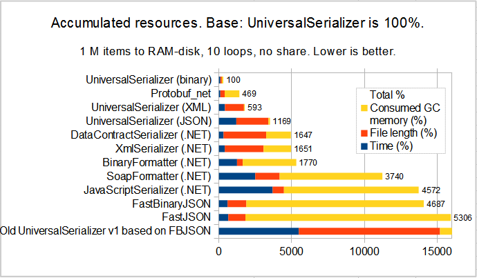

UniversalSerializer, an easy data serialization library
What is UniversalSerializer ?
{kind=link}
UniversalSerializer is a free open-source advanced serializer for .NET and .NET Core.
It can run on Windows, Linux, Android and (probably) macOS1 and iOS1.
In other words, it saves and loads complex object values/instances to and from a file stream. The stream format can be binary, JSON, or XML.
It has been designed to be able to serialize very complex types with ease (as the WPF's Window class for example).
It contains DLLs for:
- .NET 4.0 and .NET 4.5.
On Windows, macOS1, Linux, Android & iOS1. - .NET 3.5.
On Windows. - .NET Core 2.
On Windows, macOS1 & Linux. - .NET Standard 2.
On Windows, macOS1, Linux, Android & iOS1. - Android (specifically).
- Silverlight.
On Windows & macOS1. - UWP (Universal Windows).
On Windows. - An additional DLL for specific WPF's types.
On Windows. - An additional DLL for specific Windows Form's types.
On Windows.
A synthetic table is available in the documention.
Examples of usage
Example saving to a binary file
var data = new Hashtable(); data.Add(0, 1); using (var s = new UniversalSerializer("serialized.uniser")) { s.Serialize(data); var data2 = s.Deserialize<Hashtable>(); }
That is that simple!
Example saving to a stream
var data = new Hashtable(); data.Add(0, 1); using (var ms = new MemoryStream()) { var s = new UniversalSerializer(ms); s.Serialize(data); var data2 = s.Deserialize<Hashtable>(); }
Example saving to an XML file
var data = new Hashtable(); data.Add(0, 1); using (var s = new UniversalSerializer("serialized.uniser.xml", SerializerFormatters.XmlSerializationFormatter)) { s.Serialize(data); var data2 = s.Deserialize<Hashtable>(); }
Example saving to a JSON file
var data = new Hashtable(); data.Add(0, 1); using (var s = new UniversalSerializer("serialized.uniser.json", SerializerFormatters.JSONSerializationFormatter)) { s.Serialize(data); var data2 = s.Deserialize<Hashtable>(); }
Example on WPF
There is a specialized DLL for WPF, that manages more WPF types:
var data = new System.Windows.Window() { Title = "Hello!" }; using (var s = new UniversalSerializerWPF("serialized.uniser")) { s.Serialize(data); var data2 = s.Deserialize<System.Windows.Window>(); }
Example on Windows Forms
There is a specialized DLL for Windows Forms, that manages more Windows Forms types:
var data = new System.Windows.Forms.Form() { Text = "Hello!" }; using (var s = new UniversalSerializerWinForm("serialized.uniser")) { s.Serialize(data); var data2 = s.Deserialize<System.Windows.Forms.Form>(); }
(1) Apple: Some libraries are compiled for macOS and iOS. But I did not test them on these systems (I don't own this hardware).